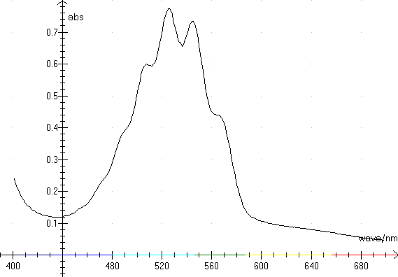
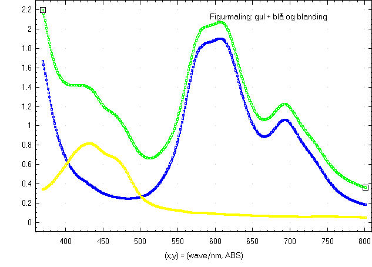

This graph shows absorbance in permanganate measured at a Shimadzu spectrophotometer.

Notice the color spectrum at the abscissa axis.
And beneath a graph showing absorbance in finger-painting. There are curves for 3 different colors: blue and yellow and the mixture (green). The same colors are used to draw the graphs. The concentration in the mixture is changed relative to the yellow and blue solutions.

There are many different spectrophotometers at the market. Each instrument has its advantages and disadvantages. It's like a car. There are always something, that should be made differently! Read the description of each individual device carefully before you make your deal!
Remember: